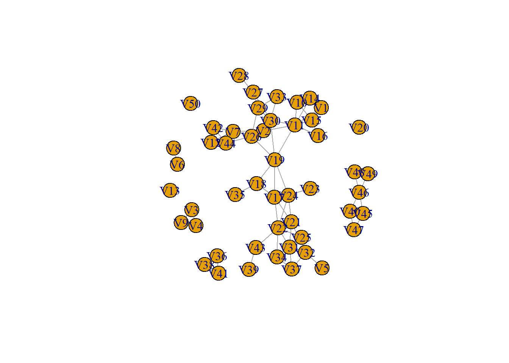

#install.packages('RSiena')
library(RSiena)
#install.packages('igraph')
library(igraph)First I want to visualise the data because that makes it easier to understand:
View(s501)
copys501 <- s501
graph1 <- graph_from_adjacency_matrix(
copys501,
mode = "undirected",
weighted = NULL,
diag = TRUE,
add.colnames = NULL,
add.rownames = NA
)
plot(graph1)
My mission was to explore the betweenness, so let’s use the betweenness() function:
betweenness(
graph1,
v = V(graph1),
directed = FALSE,
weights = NULL,
normalized = FALSE,
cutoff = -1
)#> V1 V2 V3 V4 V5 V6 V7 V8
#> 0.0000000 19.8666667 0.0000000 0.0000000 0.0000000 0.0000000 40.3666667 0.0000000
#> V9 V10 V11 V12 V13 V14 V15 V16
#> 0.0000000 5.8333333 151.6000000 0.0000000 0.0000000 0.8333333 0.8333333 0.0000000
#> V17 V18 V19 V20 V21 V22 V23 V24
#> 112.0000000 31.0000000 261.6166667 0.0000000 71.0000000 130.3333333 0.0000000 121.0000000
#> V25 V26 V27 V28 V29 V30 V31 V32
#> 2.0000000 96.6333333 31.0000000 0.0000000 9.6166667 89.0666667 18.3333333 38.0833333
#> V33 V34 V35 V36 V37 V38 V39 V40
#> 4.7333333 7.2500000 0.0000000 0.0000000 1.0000000 0.0000000 0.0000000 1.5000000
#> V41 V42 V43 V44 V45 V46 V47 V48
#> 0.0000000 0.0000000 31.0000000 22.0000000 1.5000000 6.0000000 0.0000000 0.0000000
#> V49 V50
#> 0.0000000 0.0000000V22 has the highest betweenness score!
Now let’s try a directed version:
graph2 <- graph_from_adjacency_matrix(
copys501,
mode = "directed",
weighted = NULL,
diag = TRUE,
add.colnames = NULL,
add.rownames = NA
)
betweenness(
graph2,
v = V(graph2),
directed = TRUE,
weights = NULL,
normalized = FALSE,
cutoff = -1
)#> V1 V2 V3 V4 V5 V6 V7 V8 V9
#> 0.000000 50.833333 0.000000 0.000000 0.000000 0.000000 54.333333 0.000000 0.000000
#> V10 V11 V12 V13 V14 V15 V16 V17 V18
#> 44.000000 128.833333 0.000000 0.000000 5.000000 43.833333 0.000000 176.000000 38.000000
#> V19 V20 V21 V22 V23 V24 V25 V26 V27
#> 202.000000 0.000000 70.000000 220.000000 0.000000 67.000000 25.666667 72.000000 12.000000
#> V28 V29 V30 V31 V32 V33 V34 V35 V36
#> 0.000000 10.666667 79.166667 68.500000 47.500000 47.333333 10.000000 0.000000 0.000000
#> V37 V38 V39 V40 V41 V42 V43 V44 V45
#> 3.333333 0.000000 0.000000 1.500000 0.000000 0.000000 26.000000 11.000000 1.500000
#> V46 V47 V48 V49 V50
#> 10.000000 0.000000 0.000000 3.000000 0.000000V22 still has the highest betweenness score, but the numbers are different now. I would love to know what this data actually means (what are the ties? Friends? Partners? Co-authors?) and whether the ties were measured as undirected or directed… What does R do when you tell it that your network has directed ties when really they are undirected?